-

María Graciela Gómez
La primera reina aparece el año 1979, edición número 20 del certamen. En aquella ocasión la animadora del Festival, María Graciela Gómez se quedó con la corona de forma casi espontánea, ya que el público de Viña la proclamó como reina de forma simbólica.
-
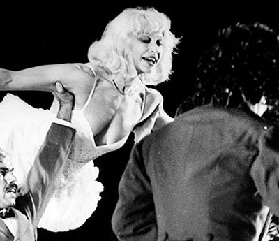
Raffaella Carrà
Fue el año 1982 -y a instancias del médico Luis Sigall, uno de los fundadores del certamen y en ese entonces presidente del jurado- cuando se realizó la primera votación para elegir a la reina del Festival. Las preferencias se las llevó la italiana Rafaella Carrá, quien deslumbró a todos por su belleza. La italiana sería así, la primera reina oficial del Festival de la canción de Viña del Mar.
-
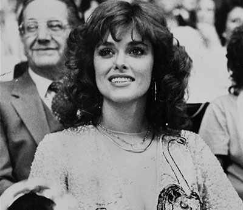
Lucía Méndez
La actriz mexicana llegó a la edición número 24 del Festival de Viña del Mar, el año 1983, como parte del jurado de la competencia internacional. La actriz era conocida en Chile por su aparición en teleseries como "Paloma", "Colorina" y "Vanessa". La fama y popularidad de la diva mexicana era tal, que hubo un consenso general para elegirla como la reina del certamen, siendo la segunda soberana "elegida" por la prensa acreditada.
-
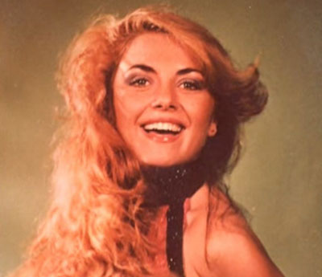
Jeanina Matei
El XXV Festival Internacional de la Canción de Viña del Mar 1984, correspondiente a las Bodas de Plata del certamen, se realizó del 8 al 13 de febrero y tuvo como sorpresa la recordada Escenografía de la Quinta Vergara que recreó a escala la fachada del Palacio Vergara. Este año la representante de Rumania en la Competencia Internacional, Jeanina Matei fue coronada como la Reina del Festival 1984. Hasta el momento la última reina proveniente del Viejo Continente.
-
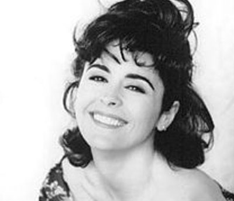
María "Conchita" Alonso
María Concepción Alonso Bustillos mejor conocida como María Conchita Alonso, es una actriz y cantante cubana que fue elegida reina del Festival de Viña del Mar en 1985. La cantante visitó la Quinta Vergara en el año 1985 donde interpretó grandes éxitos como “Noche de copas”, “Acaríciame”, “Hazme sentir” entre otros.
-
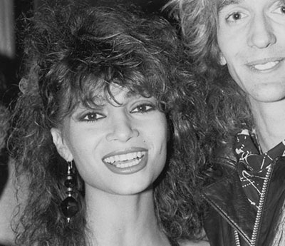
Cindy Valentine
El XXV Festival Internacional de la Canción de Viña del Mar 1986 fue un certamen de pocas figuras del ambiente artístico musical. En aquel año, la representante de Canadá en la Competencia Internacional, la cantante Cindy Valentine fue coronada como la Reina del Festival 1986. Hasta el momento la única norteamericana en colocarse la corona.
-
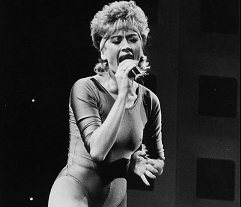
Irene Llano
1987 fue el año en que el Festival de Viña del Mar fue "liderado" por artistas argentinos como Soda Stereo y G.I.T., dejando en claro que esos sonidos eran los claros dominadores del gusto juvenil de la época, lo que también quedó demostrado en los artistas chilenos que participaron: Cinema y UPA. Entre estos artistas, la cantante chilena Irene Llano, quien llegaba al escenario de la Quinta Vergara con éxitos menores, se convirtió en la reina del Festival. Curiosamente, en ese entonces, era la segunda nacional en quedarse con la corona.
-
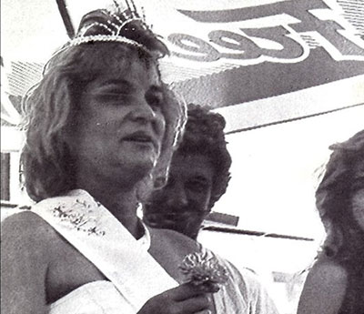
Marcela "Mache" Sánchez
La convulsión que vivía Chile el año 1988 también afectó al Festival de la Canción de Viña del Mar. Ese año, la cantante peruana Marcela "Mache" Sánchez participó en la competencia internacional con el tema "No vas a hacerme el amor", que fue descalificado bajo acusaciones de plagio, aunque luego se supo que el motivo fue porque contenía la palabra "NO" 62 veces, lo que se consideró como publicidad abierta para la opción "No" del plebiscito que marcaría el final de la dictadura de Pinochet. A modo de protesta, la prensa eligió a la peruana como la reina del certamen.
-
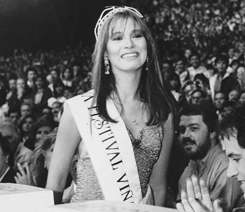
Myriam Hernández
La cantante nacional Myriam Hernández estaba iniciando una promisoria carrera internacional cuando arribó al Festival de Viña del Mar el año 1989. La simpatía de la artista y su connotación como una de las grandes artistas chilenas, fueron motivos suficientes para que la prensa la eligiera como la reina ese año.
-
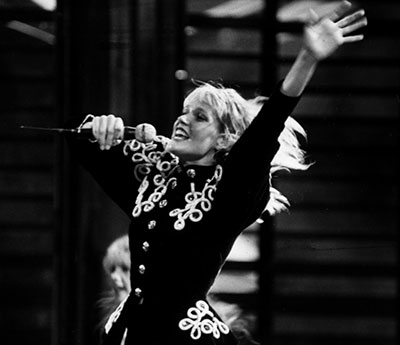
Xuxa
La brasileña Maria da Graça Meneghel, arribó al Festival de 1990 acompañada por un éxito sin precedentes por su programa infantil. La denominada "reina de lo bajitos" -en alusión a los niños- llegó al escenario de la Quinta Vergara acompañada de su cuerpo de baile con el que montó un espectáculo infantil en pleno Festival, el que la valió varios reconocimientos. Uno de ellos, fue haber sido elegida como la reina del Festival.
-
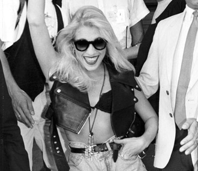
Yuri
Era 1991 y en Chile se cumplía un año desde el retorno a la democracia. Fue ese el marco que vio cómo la cantante mexicana Yuri, acreedora de éxitos como ´Hombres al borde de un ataque´ y ´No puedo más´, se hizo con la corona del certamen, la que conquistó gracias a su chispeante personalidad. La azteca ya había participado en el Festival el año 1984 como parte de la competencia (el año 1991 regresó como artista invitada) y regresaría los año 1995 y 2011.
-
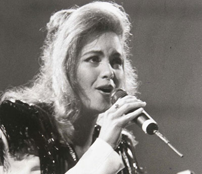
Lucero
La carrera de la mexicana Lucero era, en 1992, todo luces y estrellas. Temas como ´Ya no´ y ´Electricidad´ sonaban fuerte en las radios locales, por lo que su gran popularidad, además de una simpatía elogiada hasta el día de hoy, hicieron que la artista se quedara con la corona de Viña 1992.
-
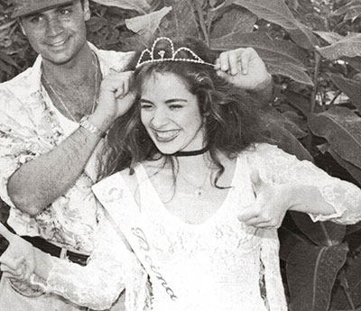
Gloria Trevi
La cantante mexicana Gloria Trevi aterrizó al Festival -el último a cargo de TVN- acompañada de un gran éxito radial por temas como ´Pelo Suelto´. Su popularidad fue clave para que fuese escogida como la reina del Festival, aunque en su -a estas alturas- histórica presentación en el escenario de la Quinta Región, muchos se cuestionaron su "idoneidad" para llevar la corona, particularmente por su atrevida performance.
-
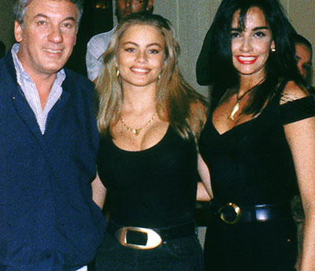
Sofía Vergara
1994 fue el primer año en que el Festival fue organizado por Megavisión. Como una forma de "innovar", se acordó que Antonio Vodanovic fuese acompañado por distintas coanimadoras durante las noches del evento. Una de ellas, la modelo Sofía Vergara, de inmediato se ganó los favores de la prensa acreditada y fue coronada como reina del Festival.La actriz volvería a animar el certamen al año siguiente.
-

Patricia Manterola
El conjunto mexicano Garibaldi fue uno de los invitados de peso para la edición de 1995 del Festival de Viña. Una de las integrantes del grupo, se coronaría como la reina del Festival, lo que repetiría en 2002.
-
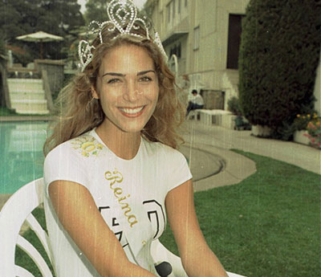
Paola Falcone
Fue la ganadora del Miss Chile 1995 quien se quedó con la corona del certamen. Paola Falcone, fue una de las elegidas para coanimar por una noche el Festival de Viña del Mar junto a Antonio Vodanovic. "A mí simplemente me avisaron que había salido elegida reina", recordó a T13 la reina del Festival de Viña 1996.
-
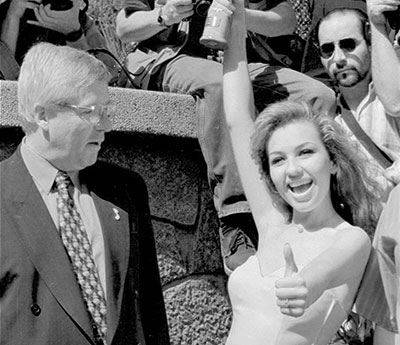
Thalía
El año 1997, la reina del Festival de Viña del Mar fue la mexicana Thalía, quien era uno de los platos fuertes del evento de ese año. La cantante venía de conseguir éxito a nivel continental con el sencillo "Amándote" y su simpatía y belleza le granjeó el favoritismo del medio local.
-
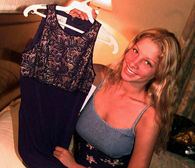
Sofía Franco
Una joven Sofía Franco -en ese entonces de 20 años- se coronó como la reina del Festival. La coanimadora, según relató al diario El Comercio en febrero de 2011, recibió con sorpresa la corona. "Entre presentadoras y cantantes, había chicas de muchos países(...) Hasta hoy, guardo la corona, la banda y muchas fotos", recordó Franco.
-
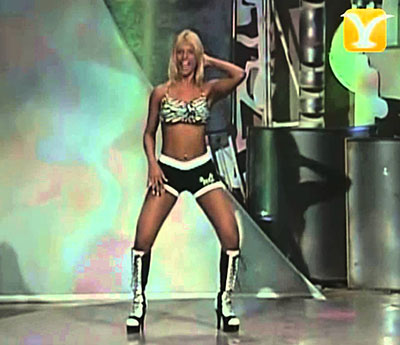
Carla Pérez
El XL Festival Internacional de la Canción de Viña del Mar 1999 fue el último en que Megavisión llevó a cabo las transmisiones del evento. Carla Pérez, ex bailarina del grupo É o Tchan de los años noventa, además de haber estado en Viña 1997 como bailarina, volvió al certamen en 1999 para coanimarlo una noche junto a Antonio Vodanovic, en donde también aprovechó de mostrar sus dotes para la danza.
-
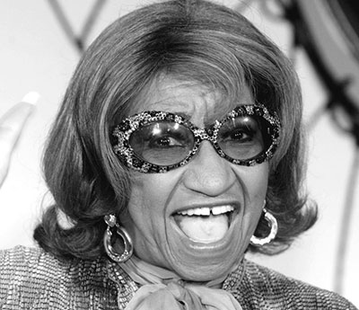
Celia Cruz
Hasta el año 2000, la elección de la reina del Festival era un evento más dentro de todo el aparataje del certamen viñamarino. Eso cambió drásticamente con la elección de la soberana de ese año, cuya corona recayó en la "Reina de la Salsa". Su simpatía y buen humor fueron suficientes para derrotar a la que era, en ese entonces, la aspirante número uno a la corona: Cecilia Bolocco.
-
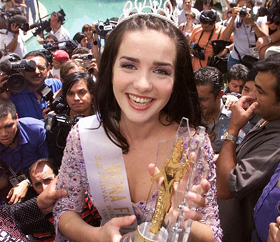
Natalia Oreiro
En 2001, la situación fue más "normal" al ratificarse a la cantante y actriz Natalia Oreiro como la soberana del certamen. La uruguaya obtuvo 58 votos entre los periodistas acreditados al Festival. La ceremonia de coronación se realizó en el Hotel O´Higgins y ahí, Oreiro se lanzó un improvisado "piscinazo" a la pileta del recinto, iniciando así esta "tradición" que cumple de forma sagrada cada reina elegida del Festival.
-
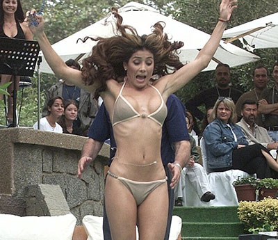
Patricia Manterola
La cantante y actriz mexicana Patricia Manterola fue elegida como la reina del Festival de Viña el año 2002. Junto a Angélica Castro y Myriam Hernández -también candidatas- coanimaron el Festival junto a Antonio Vodanovic. De esta forma, la mexicana se convirtió en la única mujer en colocarse por segunda ocasión la corona de reina del certamen viñamarino.
-

María Eugenia Larraín
"Kenita" se impuso en esa ocasión a Karen Doggenweiler por 47 a 34 votos y fue la primera mujer en colocarse la corona sin ser parte directa del Festival, sino de un programa satélite de la fiesta, rompiendo así con la tradición de que las reinas eran las coanimadoras del certamen, formaban parte del jurado o eran alguna artista invitada al evento.
-
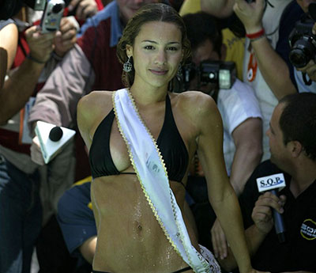
Carolina "Pampita" Ardohaín
El año 2004, la modelo argentina "Pampita", se coronó como la reina del Festival de Viña del Mar, superando a Pamela Díaz, su más fuerte competencia. Su presencia fue de las más comentadas en la edición de ese año del certamen y su piscinazo, uno de los más elegantes que se recuerden. En la ocasión, la argentina lució un elegante bikini negro que fue aplaudido por la prensa apostada en el Hotel O´Higgins.
-
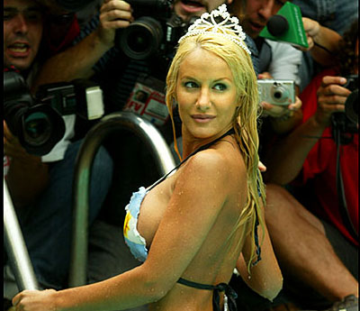
Luciana Salazar
"Luli" Salazar se coronó como la reina del Festival de Viña 2005 al superar de manera holgada a sus competidoras. La presencia de la exuberante trasandina provocó tal revuelo que es recordada por haber arruinado la conferencia de Juanes cuando acudió al lugar. Eso sí, cuando llegó la hora del tradicional "piscinazo", se mostró más "recatada", luciendo un bikini inspirado en Chile y Argentina.
-
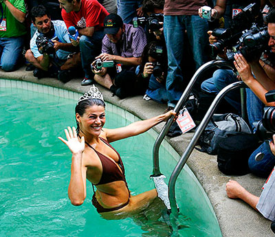
Tonka Tomicic
El año 2006, y con el lema "100% natural", la entonces animadora del "Buenos Días a Todos", Tonka Tomicic, arrasó con las votaciones para quedarse con la corona del Festival de Viña del Mar. La modelo consiguió 157 votos, superando holgadamente a su competencia, entre las que encontraban las modelos argentinas Pamela David y Karina Jelinek, de físico similar al de su antecesora, Luciana Salazar.
-
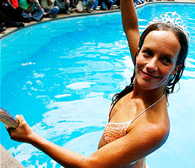
Diana Boloco
El año 2007, la animadora de Canal 13 Diana Bolocco fue coronada reina del Festival de Viña del Mar luego de vencer por sólo dos votos a Marlen Olivari. Para el tradicional "piscinazo", la entonces conductora del programa "Alfombra Roja" utilizó un bikini blanco con naranjo con el que mostró un envidiable estado físico.
-
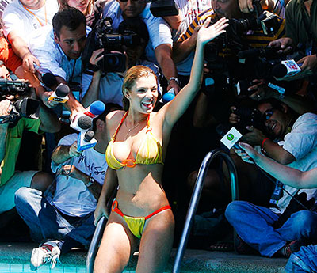
Pilar Ruiz
La entonces desconocida modelo colombiana se coronó como la reina del Festival de Viña, dejando en el camino a la brasileña Paloma "Pops" Fuiza. Para el tradicional "piscinazo", la oriunda de Medellín cumplió con su promesa de usar un diminuto bikini.
-
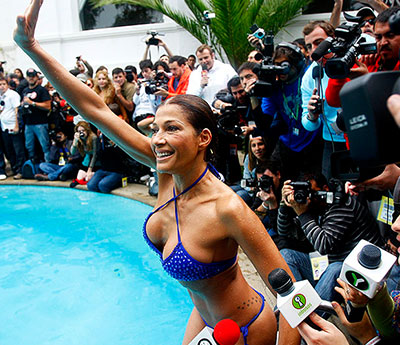
Catherine Fulop
Uno de los piscinazos que aún se recuerda, a pesar de las osadas "performances" de los últimos años, es el que protagonizó la actriz y modelo venezolana Catherine Fulop, la monarca del certamen el año 2009 luego de vencer a Lucila Vit, la española Lucía Pérez y a Nicole Pérez. Y el hecho de que el tradicional evento que se realiza en la piscina del Hotel O´Higgins sea atesorado es porque la soberana de ese entonces realizó una presentación, hasta el minuto, sin precedentes.
-
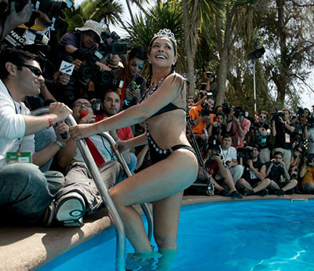
Carolina Arregui
El año 2010, y sólo por un voto, la actriz de -en ese entonces- Canal 13 Carolina Arregui se coronó como la nueva reina del Festival de Viña. La monarca -en ese entonces, con 44 años- realizó una puesta en escena simple en comparación con quienes la sucedieron.
Como dato anexo, con el reinado de Carolina Arregui en 2010 se inaugura una serie de sucesivas soberanas provenientes de Canal 13. -
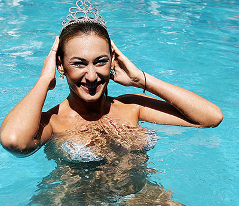
Andrea Dellacasa
En esa época, la argentina era panelista del programa "Alfombra Roja" de Canal 13 y durante su campaña, había prometido que realizaría un "piscinazo" para el recuerdo, lo que ciertamente hizo cuando reveló su atuendo para la ocasión: unos adhesivos plateados colocados de forma estratégica en su cuerpo. Antes de enseñar eso, la modelo realizó una performance tipo "striptease" para luego, revelar su "traje".
-
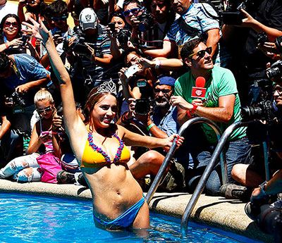
Valeria Ortega
La entonces notera de "Bienvenidos", el programa matinal de Canal 13, se quedó con la corona que el año anterior había utilizado la argentina Andrea Dellacasa quien, para el clásico "piscinazo", realizó una osada performance. Ortega realizó una actuación más "recatada" -la que incluyó un baile que imitó a un striptease- aunque igual derrochó sensualidad en la cita.
-
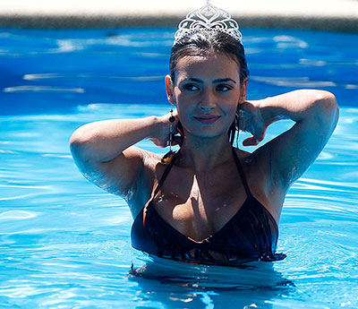
Dominique Gallego
La entonces "opinóloga" y panelista del programa "Alfombra Roja" de Canal 13, Dominique Gallego, fue la nueva soberana del Festival de Viña en 2013.Esta no era la primera vez que la ex chica reality participaba en la carrera por la corona del Festival, ya que se había postulado -aunque sin éxito- el año 2009. Y para el tradicional "piscinazo", la entonces panelista de "Alfombra Roja" brilló con un bikini café claro de la diseñadora nacional Carmen Gloria Rojas.
-
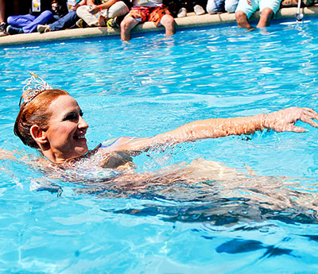
Sigrid Alegría
Desde un comienzo fue la favorita de los periodistas acreditados para el evento, lo que le valió superar a sus competidoras -en ese entonces, Javiera Acevedo y Karen Paola- por cerca de cien votos. Y para su "piscinazo", la soberana cumplió con una promesa de campaña: lanzarse a la pileta del Hotel O´Higgins sólo con la corona, protagonizando un espectacular cuerpo pintado.
-
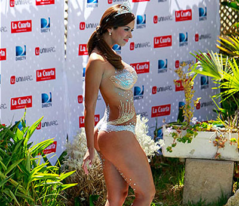
Jhendelyn Núñez
La notera del matinal venía de ganar la famosa "Vedetón" hace sólo unos meses, por lo que si bien desde su comando no ocultaron su sorpresa por la votación (obtuvo 164 votos de 444 emitidos), su arrastre era evidente entre la prensa. Y para el piscinazo en el Hotel O´Higgins, la modeló deslumbró al mostrarse con su cuerpo cubierto sólo por cristales.
-
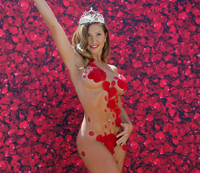
Nicole "Luli" Moreno
La representante del programa "Bienvenidos" fue la última de una serie de monarcas en protagonizar un osado "piscinazo": en esta ocasión, inspirado en la clásica escena del filme "Belleza Americana". Apareció en la pileta del Hotel O´Higgins con su cuerpo cubierto por pétalos de rosa estratégicamente colocados.
Como dato curioso, la soberana del certamen confidenció que no sabía nadar. -
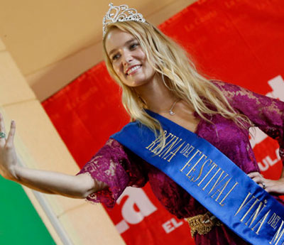
Francisca "Kika" Silva
La modelo chilena, representante de Canal 13 obtuvo, a diferencia de años anteriores, por una escasa diferencia de 6 votos el título de Reina del Festival por parte de la prensa. Sin embargo, “Kika” suspendió en primera instancia el piscinazo producto de las protestas que pobladores del campamento Felipe Camiroaga realizaron el día del evento. Al día siguiente cumplió con el evento, pero tuvo una presentación más austera en comparación a lo planificado originalmente.
-
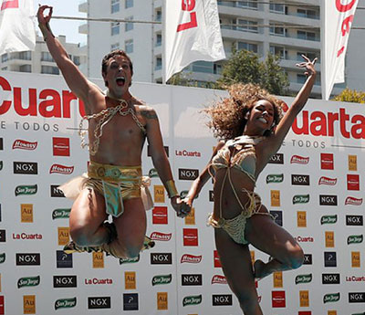
Betsy Camino y Matías Vega
Los primeros reyes del Festival, realizaron una peculiar “performance” al estilo de la serie "Game Of Thrones”. Después de una intensa campaña por lograr la corona, Canal 13 logró por décimo año consecutivo, la obtención de certamen de la mano de la bailarina cubana y el animador chileno.